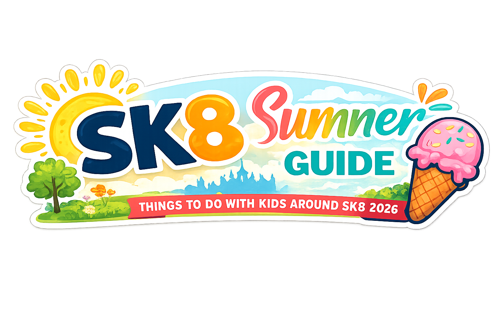

GET THE NEXT ONE
One free local email every Friday.
Join 260+ local readers and let the useful bits come to you.
Know what’s happening around SK8 before everyone starts asking in the Facebook group. Get the best things to do, useful local updates, new openings and money-saving ideas across Cheadle, Cheadle Hulme, Gatley and Heald Green. Free every Friday.
Join 260+ local readers and let the useful bits come to you.

Tell us about useful events, openings, offers, jobs, classes and community information.
Submit local infoIssue 5 brings together local plans, cheaper ideas, practical updates and useful discoveries in one quick Friday read.

FREE GUIDEFree and cheaper activities, rainy-day fallbacks, events, parks and practical ideas around SK8 and nearby. The guide is updated as better ideas and corrections arrive.
SK8 Scoop does the digging, checks the details and puts the useful bits in a predictable Friday email.
Clear dates, prices, places, links and a reason each item matters locally.
Daily inbox clutter, paid praise disguised as news or a generic Stockport list.
Sponsored content is labelled and cannot buy favourable editorial judgement.
Sponsored newsletter placements, recurring partnerships and trackable local offers are available to suitable businesses. Editorial inclusion remains separate.
 CURRENT, DATED PROOF
CURRENT, DATED PROOFFree every Friday. Cheadle, Cheadle Hulme, Gatley, Heald Green and nearby SK8.